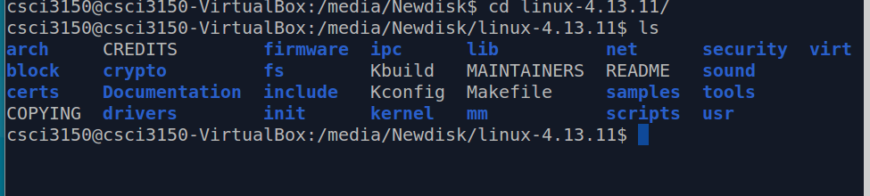

Download and extract the latest kernel source
Go to kernel.org and download the latest kernel source code version (4.13.11) into /media/Newdisk.
cd /media/Newdisk
wget https://cdn.kernel.org/pub/linux/kernel/v4.x/linux-4.13.11.tar.xz
Change to the directory where the file was downloaded and extract it using:
tar -xvf linux-4.13.11.tar.xz
Change the current directory into the linux-4.13.11 directory.
cd linux-4.13.11
It should contain folders called arch, fs, crypto, etc. 